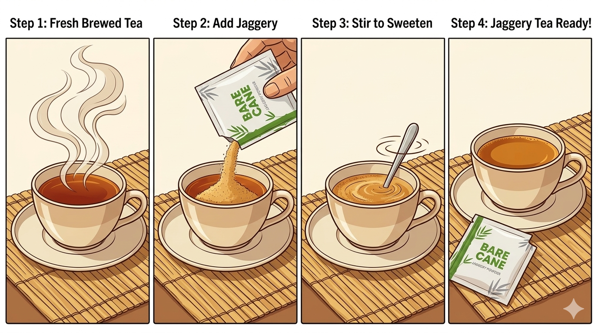

Premium natural ingredients
We deliver handcrafted natural products, curated recipes, and practical guidance for an Indian lifestyle rooted in quality, taste, and health.
Explore how to use BareCane Jaggery
Seasonal India is a premium destination for natural ingredients, traditional wellness, and clean nutrition. We combine the spirit of Indian heritage with a modern, professional experience designed for homes, chefs, and business partners.
Curated from reliable farms and tested for purity at every stage of production.
Natural products without preservatives, artificial colours, or refined sugar.
Clear usage advice, recipes, and wellness tips so you can enjoy every product with confidence.
Rich in iron, minerals and natural sweetness. Ideal for hot beverages, traditional sweets, and everyday cooking.
Useful for families, chefs, and modern kitchens who want healthier alternatives with authentic flavour.
Visit the detailed usage guide to learn how to prepare tea, sweets, and lifestyle recipes with BareCane Jaggery.
Visit seasonalindia.com/howto